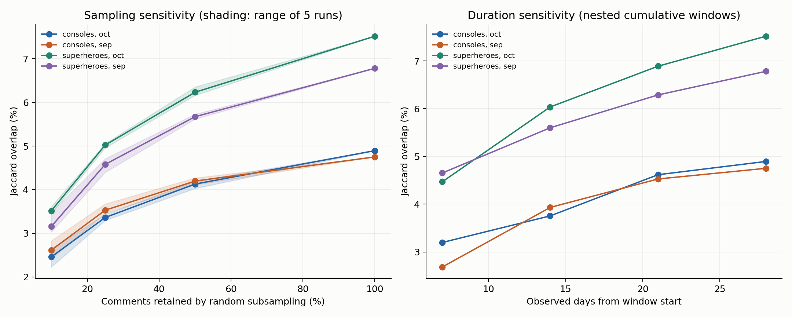
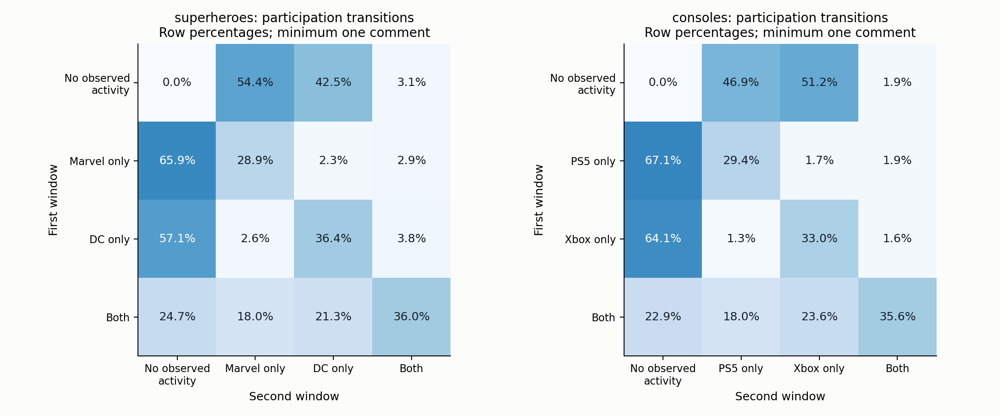
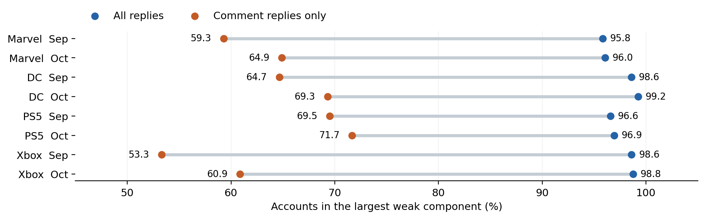
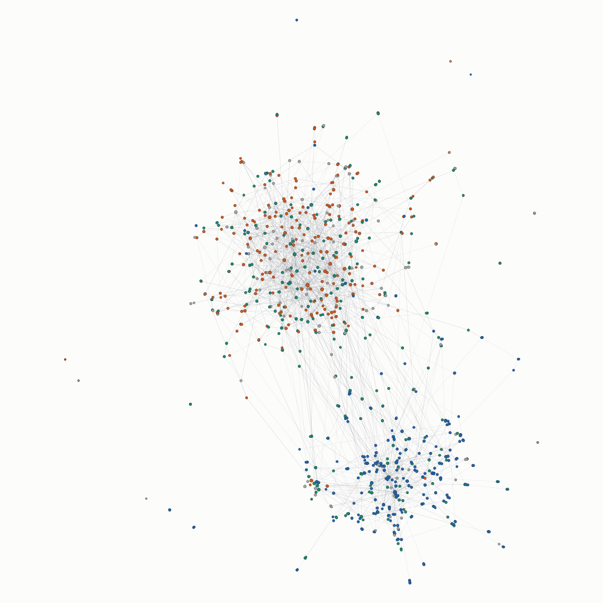
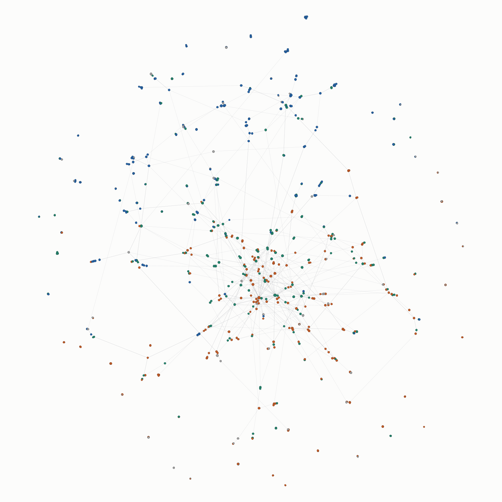
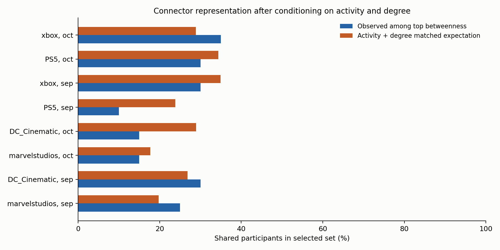
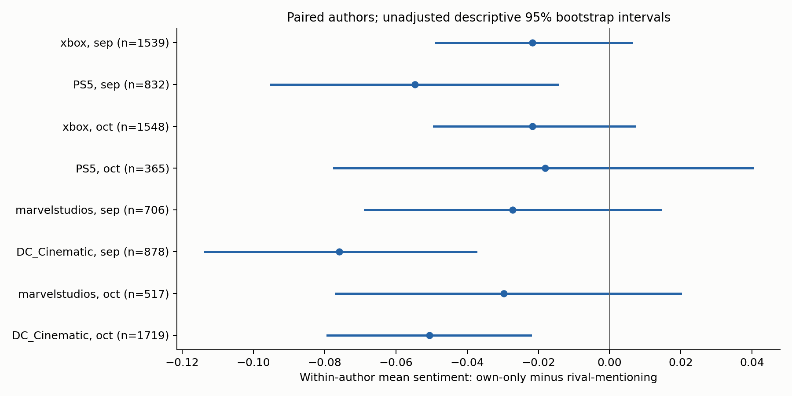
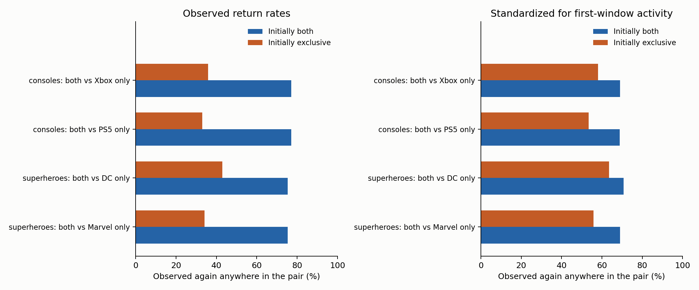

Fandom Fault Lines
Participation boundaries and reply networks across rival Reddit communities
We investigate whether rival Reddit communities have separate or overlapping audiences using content, reply networks and temporal participation. An initial Marvel/DC pilot was expanded to two rivalries and two comparison audiences, covering 1,168,638 archive comments over 56 days. Marvel/DC and PS5/Xbox share 8,807 and 4,978 commenters, respectively, but only 17.9% and 19.0% of pooled shared users participate in both communities in both windows. Network connectivity depends strongly on replies to thread starters, while combined segregation exceeds within-subreddit mixing. Automated sentiment does not establish consistent rival-directed hostility. Independent graph audits and Gephi verification support reproducible, bounded conclusions.
Entertainment rivalries provide a useful setting for studying social boundaries without assuming that competition between brands implies hostility between individuals. Marvel and DC, and PlayStation and Xbox, have dedicated Reddit spaces in which people discuss releases, characters, products and industry decisions. However, a separate subreddit does not necessarily represent a separate audience. The same account can participate in several communities, and an interaction can express agreement, criticism, curiosity or disagreement.
Fandom Fault Lines asks: to what extent do rival communities form distinct versus overlapping audiences, and how do their content, internal reply structure and participation boundaries differ? The original project examined a small Marvel/DC sample. A subsequent audit showed that sampling, inconsistent graph assumptions and outdated reporting could affect interpretation. We therefore expanded the observation design and made measurement validity central to the study.
The completed analysis compares two rivalries over consecutive 28-day windows and uses StarWars and lotr as additional audience comparisons. It combines mention and sentiment analysis, shared topic models, directed weighted reply graphs, participation transitions and activity-adjusted comparisons. Gephi provides inspectable network workspaces and explicitly filtered visualizations, while numerical findings are calculated on full graphs.
The contribution is an integrated case study showing that audience overlap, persistent participation, structural connectivity and rival-directed attitudes are different quantities. Our findings support permeable and changing participation boundaries, while identifying limits on connector and hostility claims.
Recent research treats online separation as a multidimensional phenomenon involving participation, interaction, content and temporal change. This review synthesizes twelve relevant studies from 2024 to 2026; foundational sentiment and layout methods are cited separately in the methodology. Most empirical studies concern politics rather than entertainment, so their mechanisms motivate our design without establishing expected outcomes for fandoms.
Cirulli et al. [1] examine Reddit political discourse using statistically validated interaction-based and topic-based communities. Their analysis identifies polarization and changes in cross-group engagement around the 2016 US election. The implication is methodological: Reddit should not be presumed uniformly resistant to echo chambers, and community separation requires explicit operationalization. We therefore distinguish subreddit membership, actual replies and language rather than treating one network picture as a complete polarization measure.
Goglia and Vega [2] model Reddit threads as evolving interaction networks. They show how thread structure, sparse clustering and differing growth patterns reflect conversational behavior and community guidelines. This directly motivates our distinction between replies to original posts and replies to comments. Blondel, Guillaume and Lambiotte [3] review the Louvain method and its extensions, emphasizing community detection as optimization of a specified quality function. Detected partitions consequently describe graph organization; they are not independently established fan identities or ideological camps.
Yuan, Schneider and Rizoiu [4] introduce behavioral homophily inferred through inverse reinforcement learning across millions of Reddit interactions. Behavioral similarity can differ from topical similarity, illustrating that shared interests and similar interaction policies are not interchangeable. Our account labels are therefore restricted to observed participation. We do not infer allegiance from a subreddit visit, and our assortativity coefficient measures mixing by prior participation rather than opinion homophily.
Xia et al. [5] study engagement following cross-party replies and find that subsequent out-party participation depends on conversational context; increased in-party engagement can resemble general feedback-driven activity. Russo, Horta Ribeiro and West [6] use matched comparisons to examine recruitment following interactions with fringe users. Together, these studies motivate temporal ordering and appropriate comparison groups. They do not justify assuming that cross-fandom contact causes integration, retention or hostility. Our return-rate analysis remains associational and adjusts only for measured posting activity.
Machado et al. [7], in a 2025 preprint, report heavy-tailed contribution patterns and increasing activity concentration as Reddit communities grow. Oswald, Schulz and Lorenz-Spreen [8] experimentally investigate why people become silent observers or highly active contributors. Their findings underline that visible discourse disproportionately reflects selected participants. This motivates equal-author sentiment comparisons, activity-matched connector tests and transparent disclosure of the composition of our high-PageRank visualization subsets. Commenters cannot stand in for all readers.
Measurement of attitudes is a separate challenge. Burnham [9] distinguishes sentiment from stance and discusses supervised, natural-language-inference and in-context approaches alongside validation. Jamadi Khiabani and Zubiaga [10] review cross-target stance detection, showing why target transfer and target-specific evaluation matter. In our setting, criticism of an own-franchise release may coexist with praise of a rival. A negative whole-comment score therefore cannot be directly interpreted as rival-directed hostility, even when an alias dictionary identifies the rival.
Nguyen and Kim [11] find that adding external information can degrade LLM stance predictions through contextual bias. Gera and Neal [12] show that linguistic complexity, emotional mixtures and hedging help explain stance-classification errors across datasets. These studies caution against replacing an unvalidated lexical score with an unvalidated language-model label and calling the result ground truth. We accordingly retain original and adapted VADER as sensitivity measures, disclose the inherited AI-labelled development set, and prepare blinded human annotation rather than reporting fabricated human accuracy.
The resulting research gap is not simply the absence of another large network visualization. The reviewed work motivates a joint examination of observation sensitivity, reply mechanics, changing audience boundaries and construct validity in rival entertainment communities. Our study brings these dimensions together with an auditable pipeline and a cross-domain comparison. It also separates the conclusions that are supported now from those requiring additional evidence: structural and participation claims are bounded by the collected periods, while validated target-directed attitudes remain an open task.
The initial approximately 19,000-comment Marvel/DC pilot established a modular workflow, but its latest-per-slot sampling missed substantial activity and reply relationships. The audit also identified stale reporting, lost reciprocal weights during undirected conversion, disappearing isolates and conflation of sentiment with stance. The final design followed four stages: audit the measurement, expand the observations, add sensitivity and adjusted comparisons, and independently verify the resulting networks. The extensions were designed after inspecting earlier results and are exploratory, not preregistered.
The original pilot runner is retained for provenance. The canonical comparative workflow is run_study.py, configured by study.json, with separate collection, analysis, advanced-analysis, network-review and report stages. This report uses the current aggregate outputs and does not reuse the superseded pilot overlap headline.
Comments were retrieved from the Arctic Shift archive API [15] in daily UTC batches. The first window is 3 September to 1 October 2026 and the second is 1 October to 29 October 2026, with both end dates exclusive. The four rivalry communities provide detailed text and reply records; StarWars and lotr provide lighter author-time records for audience comparisons.
| Role | Subreddit | First window | Second window | Total records |
|---|---|---|---|---|
| Superheroes | marvelstudios | 167,661 | 138,911 | 306,572 |
| Superheroes | DC_Cinematic | 88,049 | 140,166 | 228,215 |
| Consoles | PS5 | 99,959 | 72,109 | 172,068 |
| Consoles | xbox | 92,898 | 88,966 | 181,864 |
| Comparison | StarWars | 101,882 | 99,426 | 201,308 |
| Comparison | lotr | 41,004 | 37,607 | 78,611 |
| Six communities across 56 days | 1,168,638 | |||
Table 1. Archive records by community and window. All 336 expected community-day files pass coverage checks. Source: collection_inventory.csv.
Requests page backwards in batches of up to 100 comments, retain records inside the declared day and deduplicate IDs. Rate limits and transient failures trigger retries; ambiguous timestamp pagination and safety-cap exhaustion fail explicitly. Completed daily files are installed only after validation. New downloads record retrieval times and SHA-256 checksums; inherited caches lack historical request manifests. Complete files do not certify complete Reddit coverage.
Participation and content use separate eligibility rules. Participation retains identifiable accounts after missing/deleted-author and documented bot-list exclusions, even when their text is unusable. Content additionally removes empty or removed bodies, duplicate IDs, URL and embed clutter, text shorter than three characters after cleaning, and text without Latin letters. This is not a comprehensive bot classifier or language detector. Of 888,719 rivalry-community records, 852,512 pass the content filters.
Comment IDs, parent IDs and thread IDs are retained for relational checks. Parent authors are resolved first from collected comments and then from comment/post ID lookups, including parents outside the observation window. Unresolved parents remain explicitly counted. Consistent pseudonyms support cross-community matching. Text-bearing and account-level derivatives remain local; published outputs contain aggregates and unlabelled figures. Earlier repository history is not claimed to have been erased.
A directed edge runs from a replier to the parent author; its weight is the number of observed replies. Repeated replies increase weight rather than creating parallel edges. Self-replies are excluded and counted. Observed commenters remain nodes even when isolated, while parent-only accounts are marked separately. Four communities, two periods and two graph definitions produce sixteen full networks: all replies, and comment-only replies excluding replies to original posts.
Degree counts distinct reply partners; strength counts reply events. Weighted PageRank, reciprocity, components, k-core and participation coefficient describe complementary structural roles. Directed unweighted betweenness uses up to 128 sampled sources, with a second seed checking ranking stability. Reply frequency is not treated as a shortest-path distance. For Louvain [3], reciprocal directed weights are summed in an undirected projection. Weighted modularity is reported separately from a like-for-like unweighted comparison with ten requested degree-preserving rewires. This small null ensemble is descriptive.
A separate parent-author join and grouped-count algorithm reconstructs each saved graph from local raw records. All sixteen graphs match exactly in nodes, directed edges and integer weights. Available parent-comment thread relationships also pass consistency checks. This validates implementation fidelity to the archive, not archive completeness.
The official Gephi Toolkit imports full graphs, verifies counts and degrees, recomputes PageRank and saves/reopens native projects. Eight individual-community projects and four combined projects are available. Each preserves a full workspace and a separate display workspace. ForceAtlas2 [14] uses 400 iterations, seed 42, one thread, scaling 8, gravity 1, edge-weight influence 0.5 and LinLog mode. Display distances are illustrative; reported measurements use full graphs.
Community-specific dictionaries identify own-only, rival-only, both-franchise and general comments. Original VADER [13] and a domain-adapted lexicon score whole-comment sentiment. The adaptation is a sensitivity analysis, not a validated improvement. Own-only comments are compared with rival-only and any-rival-mention definitions using rank-biserial effects and separate author-cluster and thread-cluster bootstraps with 1,000 draws. Holm adjustment covers scorer, definition and community contrasts within each pair-period. These checks are not simultaneous two-way clustering.
Topics use TF-IDF and non-negative matrix factorization. A shared model for each rivalry is trained across both periods with balanced community-period allocation, up to 20,000 training comments, 3,000 features and unigrams/bigrams. Candidate topic counts 6, 8, 10 and 12 are compared using in-sample NPMI coherence. All usable comments are transformed afterward; insufficient topical vocabulary produces an unassigned category. Topics are exploratory model factors, not human-validated labels.
For commenter sets A and B, directional overlap is |A intersection B| / |A| and |A intersection B| / |B|. Jaccard overlap is |A intersection B| / |A union B|. We report percentages at minimum one, two and five comments per community, calculate all fifteen pairs among the six audiences, and deduplicate accounts across the pooled 56 days. Cumulative 7/14/21/28-day windows and random comment fractions of 10%, 25%, 50% and 100% assess detection sensitivity. Five seeded draws are used below 100%; these ranges are not confidence intervals.
Accounts are classified as A-only, B-only, both or neither within each window. A participation panel distinguishes persistent sharing from single-window sharing and sequential participation. Return means any observed comment in the pair during the second window. Return comparisons standardize first-window posting activity over common-support bins; one-comment exclusive accounts have no shared-account counterpart and are excluded from the adjusted target.
Paired-author sentiment gives each eligible author equal weight across own-only and rival-mentioning category means. Connector tests compare top-20 positive betweenness selections, including ties, with random selections preserving activity and optionally degree strata. Extensions use 5,000 resampling draws; Holm correction covers 32 connector comparisons. Coarse matching, approximation error and limited selected-group size remain limitations.
Combined second-window graphs merge identical accounts and retain each subreddit's edge-weight contribution. Prior-window categories supply node labels, with unobserved accounts explicit. Directed reply-event and ordered-dyad mixing are measured within each layer and in their union. Known-group categorical assortativity is (observed same-group fraction minus marginal expectation) / (1 minus marginal expectation). It does not measure ideology or causal avoidance.
The study moves from a small sampled pilot to a consistent six-community inventory. Detailed analysis uses four rivalry communities, while comparison audiences broaden the overlap benchmark. Table 2 shows why participation and linguistic evidence must retain different denominators.
| Window | Community | Participation comments | Content comments | Commenters |
|---|---|---|---|---|
| Sep | Marvel | 164,337 | 159,073 | 47,298 |
| Oct | Marvel | 137,215 | 133,558 | 37,315 |
| Sep | DC | 83,745 | 83,217 | 21,631 |
| Oct | DC | 134,952 | 134,151 | 27,725 |
| Sep | PS5 | 98,060 | 96,515 | 31,217 |
| Oct | PS5 | 70,950 | 69,575 | 25,665 |
| Sep | Xbox | 90,958 | 89,870 | 27,387 |
| Oct | Xbox | 87,468 | 86,553 | 27,055 |
Table 2. Corpus EDA for the four rivalry communities. Sep and Oct denote the declared 28-day windows, not full calendar months. Source: *_corpus.csv.
In the first Marvel/DC window, mean Jaccard overlap under random 10% comment sampling is 3.16%, compared with 6.78% using the full collected window. Missing one side of an account's activity can make it appear exclusive. This explains why low sampled overlap should not be accepted as direct evidence of closed audiences. The experiment demonstrates sensitivity rather than reproducing the pilot's exact sampling scheme.

Figure 1. Observation sensitivity. Cumulative durations are nested, and subsampling ranges reflect repeated seeded draws rather than inferential confidence intervals. Sources: *_duration.csv and *_sampling.csv.
| Pair and window | Shared accounts | Shared / A | Shared / B | Jaccard |
|---|---|---|---|---|
| Marvel/DC Sep | 4,378 | 9.26% | 20.24% | 6.78% |
| Marvel/DC Oct | 4,548 | 12.19% | 16.40% | 7.52% |
| Marvel/DC 56 days | 8,807 | 12.84% | 22.07% | 8.83% |
| PS5/Xbox Sep | 2,658 | 8.51% | 9.71% | 4.75% |
| PS5/Xbox Oct | 2,460 | 9.59% | 9.09% | 4.89% |
| PS5/Xbox 56 days | 4,978 | 10.70% | 11.23% | 5.80% |
Table 3. Minimum one comment per community. A/B denote Marvel/DC and PS5/Xbox. Pooled values deduplicate accounts across windows. Source: *_overlap.csv.
Marvel/DC has the highest Jaccard overlap among the fifteen selected audience pairs in both windows. This is a benchmark conditional on six communities, not a Reddit-wide ranking. Its directional asymmetry also matters: a larger fraction of DC commenters appears in Marvel than the reverse. Rivalry and shared participation coexist.
Only 1,577 of 8,807 pooled superhero shared accounts (17.9%) and 945 of 4,978 console shared accounts (19.0%) participate in both communities in each window. A further 16.6% and 16.2%, respectively, participate sequentially across windows without within-window overlap. Approximately 36% of first-window shared accounts are shared again; that conditional percentage uses a different denominator.

Figure 2. Transitions between observed participation categories. Neither means no observed activity in the pair at the specified threshold, not departure from Reddit. Sources: advanced/transitions.csv and persistence.csv.
Parent resolution in the eight all-reply graphs ranges from 99.18% to 99.95%. Largest weak components cover approximately 96-99% of nodes, but removing replies to original posts reduces coverage to approximately 53-72%. The first-window Xbox network falls from 98.61% to 53.33%. Retaining observed commenter isolates makes this loss visible rather than dropping it from the denominator.
| Window | Community | Nodes | Edges | Reciprocity | Weighted Q |
|---|---|---|---|---|---|
| Sep | Marvel | 49,487 | 147,982 | 0.217 | 0.458 |
| Oct | Marvel | 39,205 | 121,963 | 0.240 | 0.463 |
| Sep | DC | 22,130 | 71,108 | 0.275 | 0.474 |
| Oct | DC | 28,104 | 111,636 | 0.294 | 0.407 |
| Sep | PS5 | 32,104 | 86,348 | 0.243 | 0.521 |
| Oct | PS5 | 26,332 | 62,263 | 0.252 | 0.582 |
| Sep | Xbox | 28,390 | 80,906 | 0.249 | 0.494 |
| Oct | Xbox | 27,960 | 77,402 | 0.269 | 0.518 |
Table 4. Full all-reply networks. Q is weighted Louvain modularity on the reciprocal-sum undirected projection. Parent-only nodes explain why nodes can exceed observed commenter counts. Source: *_networks.csv.

Figure 3. Largest weak-component coverage for both graph definitions. Numerical labels use full graphs. Source: *_networks.csv.
Weighted modularity is 0.407-0.582. In the separate unweighted topology comparison, observed modularity exceeds the rewired mean by approximately 0.023-0.042. These values describe organization relative to the chosen null; ten rewires do not support a precise significance claim. Thread architecture remains an important competing explanation for apparent cohesion.
Figure 4 shows the second-window combined comment-reply networks. Blue indicates prior A-only participation, orange prior B-only, green prior participation in both and grey unobserved prior participation. A/B are Marvel/DC on the left and PS5/Xbox on the right. These are participation categories, not Louvain classes or inferred fan allegiance.


Figure 4. Gephi ForceAtlas2 views of comment replies, 1-28 October 2026. Left: Marvel/DC, 782 displayed nodes and 2,801 edges from a full graph of 61,356 nodes and 138,992 edges. Right: PS5/Xbox, 577 nodes and 1,058 edges from 50,692 nodes and 85,515 edges. Arrows run replier to parent author; size is 2 + 0.7 log(1 + full incoming reply strength). Layout distance is illustrative.
The combined display first caps accounts at the top 1,000 by full-graph PageRank, retains the largest weak component of that cap, keeps edges with weight at least two, and removes resulting isolates. Visually concentrated colors coexist with cross-category connections. The selection is not a representative audience sample: it emphasizes prominent accounts and repeated interactions.
| Prior category | Full superhero graph | Displayed superhero graph |
|---|---|---|
| Marvel-only | 14,917 (24.3%) | 225 (28.8%) |
| DC-only | 7,481 (12.2%) | 213 (27.2%) |
| Both | 3,322 (5.4%) | 235 (30.1%) |
| Unobserved | 35,636 (58.1%) | 109 (13.9%) |
Table 5. Display-selection audit reconstructed from the full/focus GEXFs using the native display filter. Shared-account prominence in a picture cannot establish population prevalence or exceptional brokerage.
| Pair and graph | A layer | B layer | Combined | Known-event coverage |
|---|---|---|---|---|
| Marvel/DC all replies | 0.012 | 0.001 | 0.348 | 47.95% |
| Marvel/DC comments | 0.013 | 0.003 | 0.347 | 52.50% |
| PS5/Xbox all replies | 0.003 | 0.040 | 0.349 | 45.63% |
| PS5/Xbox comments | 0.013 | 0.032 | 0.387 | 50.09% |
Table 6. Reply-event-weighted categorical assortativity among known prior categories. Coverage is the combined graph's fraction of reply events with both accounts observed in the first window. Source: network_review/mixing_summary.csv.
The combined coefficient greatly exceeds either within-layer coefficient. Different participation categories use different discussion spaces, creating an aggregation effect. Combined separation therefore cannot automatically be read as selective avoidance of particular accounts within a discussion space. Unknown prior endpoints remain in the full mixing matrices but are excluded from these coefficients. No ideological or causal interpretation is claimed.
There are 4,908 superhero and 2,240 console comment-reply events between prior A-only and prior B-only accounts in either direction. The corresponding all-reply counts are 7,428 and 3,438. These are events, not unique people; they occur within subreddit threads and do not establish agreement or diffusion.

Figure 5. Shared accounts among top positive-betweenness selections versus matched expectations. Randomization preserves stratum selection counts. Source: advanced/matched_connectors.csv.
Unadjusted selections sometimes contain more shared accounts than the community-wide baseline. Across 32 specified activity/degree-matching, period and graph-definition comparisons, however, none meets the Holm-adjusted 0.05 enrichment threshold. This qualifies the initial connector interpretation; it does not prove equivalence or the absence of a connecting role. Approximate ranks, coarse bins and small top-account selections limit power.
| Community mentioning its rival | First window | Second window |
|---|---|---|
| Marvel mentioning DC | 0.91% | 0.77% |
| DC mentioning Marvel | 2.63% | 3.41% |
| PS5 mentioning Xbox | 3.34% | 1.92% |
| Xbox mentioning PlayStation | 6.17% | 6.23% |
Table 7. Explicit rival mentions as a percentage of usable content comments under the specified dictionaries. Includes comments mentioning both franchises. Source: *_corpus.csv.
DC mentions Marvel more often than the reverse, and Xbox mentions PlayStation more often than the reverse. Alias coverage and ambiguity may contribute to these asymmetries. Across the eight main adapted-VADER, any-rival comparisons, three survive Holm adjustment under both author and thread clustering sensitivities: DC in both windows and Marvel in the second. All have negative own-minus-rival differences, meaning rival-mentioning comments score more positively on average. The result does not support treating rival mentions as automatically hostile.

Figure 6. Within-author sensitivity gives eligible authors equal weight. Intervals are unadjusted descriptive 95% bootstrap intervals, not multiple-testing-corrected significance declarations. Source: advanced/paired_sentiment.csv.
The selected shared NMF models contain six superhero and ten console factors. Keyword groups include characters and franchises, Green Lantern discussion, Game Pass, physical versus digital purchases, and hardware. Some factors capture generic conversation or moderation language. Between 31.7% and 37.4% of content comments lack sufficient topical vocabulary and remain unassigned, retained in topic-share denominators. These limitations preclude relabelling every factor as a substantive rivalry theme.
Independent human stance validation remains necessary. The inherited 300-example set was AI-labelled development data. Two blinded, independently shuffled sheets of 256 examples are prepared, but their human labels are blank. No human-validated accuracy or population hostility rate is reported.
Initially shared accounts are more likely to appear somewhere in the pair during the next window. Standardizing observed first-window activity leaves differences of 7.23-15.28 percentage points relative to exclusive participants. This supports an engagement association worth further investigation, not a causal claim that cross-participation produces retention.
| Shared compared with | Adjusted difference | Descriptive 95% interval |
|---|---|---|
| Marvel-only | 13.08 pp | 11.39 to 14.74 pp |
| DC-only | 7.23 pp | 5.50 to 8.92 pp |
| PS5-only | 15.28 pp | 13.02 to 17.49 pp |
| Xbox-only | 10.95 pp | 8.84 to 13.17 pp |
Table 8. Return means at least one observed second-window comment in the pair. Intervals use 5,000 draws with fixed stratum weights and are not multiplicity-adjusted. Source: advanced/retention.csv, observed_in_pair outcome.

Figure 7. Raw and common-support standardized return comparisons. The target population changes when one-comment exclusive accounts and other unsupported strata are excluded.
The expanded corpus replaced an unstable pilot overlap headline with directional, period-specific estimates. Temporal decomposition then showed that pooled overlap hides different participation patterns. Network sensitivity revealed how thread starters support apparent connectivity. Matched comparisons qualified the initial impression of exceptional shared connectors, while layer-specific mixing prevented the combined visualization from becoming an unsupported echo-chamber claim. Content analysis similarly shifted from a presumed hostility story toward a measurement-aware account of asymmetric attention and mixed automated sentiment.
The result is a coherent answer to the original main question: these rival audiences are distinct but overlapping, their shared participation is dynamic, and their reply structure depends on both discussion spaces and platform mechanics. This conclusion is informative even though it is less dramatic than a simple rivalry-versus-hostility narrative.
RQ1 Content. Explicit rival mentions are asymmetric, and topics provide exploratory descriptions of recurring discussion. Automated sentiment does not establish consistent rival-directed hostility. The original attitude objective is only partially addressed until independent target-specific annotation validates the measure.
RQ2 Structure. Reply graphs show large connected components, community organization and heterogeneous structural roles, but connectivity changes sharply when replies to posts are removed. All original graph constructions pass independent audits. Shared-account connector enrichment is not supported after the specified activity/degree adjustments. Structural centrality remains distinct from causal influence.
RQ3 Boundaries. Both rival pairs have measurable cross-participation, with Marvel/DC leading the selected six-audience overlap comparison. Persistent sharing is a minority of pooled overlap. Prior participation groups interact directly, while combined versus within-subreddit mixing differs substantially. These are observed commenting boundaries, not readership or fan-allegiance boundaries.
Two purposively selected rivalries and adjacent periods do not establish seasonal stability, generality across fandoms or a causal effect of rivalry. The same accounts can appear in both periods, so they are not independent replications. Release cycles, moderation and unmeasured participant characteristics may affect observed behavior. Archive completeness, bot-list coverage, language filtering and alias asymmetry remain sources of uncertainty.
Network null ensembles are small, betweenness is approximate, and display selection changes category composition. Matching within coarse activity/degree bins leaves residual confounding and limited power. Sentiment cluster sensitivities do not simultaneously model users, threads and time. Topic selection is in-sample and some factors are generic. These qualifications determine which claims are warranted; adding more comments alone would not resolve them.
The next priority is independent human annotation of overall tone and target-specific stance, with an untouched evaluation sample if the pilot informs tuning. For broader temporal claims, separated or event-aligned periods should be specified before collection. A third rivalry should be selected for a substantive comparison rationale rather than the expectation of a larger effect.
The current offline suite records 64 passing tests and one optional pretrained-model test skipped. Aggregate-integrity checks verify transition conservation, adjusted-analysis outputs and all sixteen exact graph reconstructions. Twelve native Gephi projects pass import/save/reopen checks. Fixed settings, source/input fingerprints and output hashes support reruns. The report reflects code revision 61ae796 and the associated validated outputs; no new community or duration expansion is claimed here.
The main empirical contribution is the separation of overlapping audiences, persistent participation, structural connectivity and inferred attitudes into distinct measurements. Presenting these together makes the project defensible as a bounded exploratory computational social media study.
Recent literature discussed in the review is numbered [1]-[12]. The preprint in [7] and article-in-press status of [1] are identified explicitly. Method references [13]-[14] are foundational, not presented as recent publications.
[1] Cirulli, D., Desiderio, A., Cimini, G., and Saracco, F. (2026). Polarization and echo chambers in Reddit's political discourse. EPJ Data Science, article in press. doi:10.1140/epjds/s13688-026-00707-5.
[2] Goglia, D., and Vega, D. (2024). Structure and dynamics of growing networks of Reddit threads. Applied Network Science, 9, article 48. doi:10.1007/s41109-024-00654-y.
[3] Blondel, V., Guillaume, J.-L., and Lambiotte, R. (2024). Fast unfolding of communities in large networks: 15 years later. Journal of Statistical Mechanics: Theory and Experiment. doi:10.1088/1742-5468/ad6139.
[4] Yuan, L., Schneider, P. J., and Rizoiu, M.-A. (2025). Behavioral Homophily in Social Media via Inverse Reinforcement Learning: A Reddit Case Study. Proceedings of the ACM Web Conference 2025. doi:10.1145/3696410.3714618. Author manuscript: arXiv:2502.02943.
[5] Xia, Y., Monti, C., Keller, B., and Kivela, M. (2025). Integrated or Segregated? User Behavior Change After Cross-Party Interactions on Reddit. Proceedings of ICWSM, 19, 2044-2061. doi:10.1609/icwsm.v19i1.35918.
[6] Russo, G., Horta Ribeiro, M., and West, R. (2024). Stranger Danger! Cross-Community Interactions with Fringe Users Increase the Growth of Fringe Communities on Reddit. Proceedings of ICWSM, 18, 1342-1353. doi:10.1609/icwsm.v18i1.31393.
[7] Machado, G., Pacheco, D., Menezes, R., and Baxter, G. (2025). Super-Linear Growth and Rising Inequality in Online Social Communities: Insights from Reddit. arXiv preprint. doi:10.48550/arXiv.2503.02661.
[8] Oswald, L., Schulz, W. S., and Lorenz-Spreen, P. (2025). Disentangling participation in online political discussions with a collective field experiment. Science Advances, 11(50), eady8022. doi:10.1126/sciadv.ady8022.
[9] Burnham, M. (2025; first published online 2024). Stance detection: a practical guide to classifying political beliefs in text. Political Science Research and Methods, 13(3), 611-628. doi:10.1017/psrm.2024.35.
[10] Jamadi Khiabani, P., and Zubiaga, A. (2025). Cross-target stance detection: A survey of techniques, datasets, and challenges. Expert Systems with Applications, 283, 127790. doi:10.1016/j.eswa.2025.127790.
[11] Nguyen, Q. M., and Kim, T. (2025). Is External Information Useful for Stance Detection with LLMs? Findings of the Association for Computational Linguistics: ACL 2025, 14798-14807. doi:10.18653/v1/2025.findings-acl.764.
[12] Gera, P., and Neal, T. (2026). Understanding the Linguistic Cues Behind Stance Detection. Proceedings of the 15th Joint Conference on Lexical and Computational Semantics, 302-316. doi:10.18653/v1/2026.starsem-conference.20.
[13] Hutto, C. J., and Gilbert, E. (2014). VADER: A Parsimonious Rule-Based Model for Sentiment Analysis of Social Media Text. Proceedings of ICWSM, 8(1), 216-225. doi:10.1609/icwsm.v8i1.14550.
[14] Jacomy, M., Venturini, T., Heymann, S., and Bastian, M. (2014). ForceAtlas2, a Continuous Graph Layout Algorithm for Handy Network Visualization Designed for the Gephi Software. PLOS ONE, 9(6), e98679. doi:10.1371/journal.pone.0098679.
[15] Arctic Shift. API and pagination documentation. github.com/ArthurHeitmann/arctic_shift. Accessed 26 November 2026.
[16] Fandom Fault Lines. Project source, design files, aggregate results and verification scripts. github.com/gmayank9999/fandom-fault-lines. Research revision 61ae796.
The following is a proposed equal allocation of responsibilities for Group 6, to be confirmed by all members against the work actually performed before submission. It is not an independently verified record of individual contributions.
| Name and enrollment | Proposed contribution allocation |
|---|---|
| Mayank Gupta 230553 | Data collection and preprocessing workflow; dataset coverage and provenance checks; audience-overlap and temporal-participation analysis; integration and reproducibility review. |
| Anurag Kumar 230616 | Reply-network construction and metrics review; connector and graph-sensitivity analysis; Gephi workspace inspection, visualization and interpretation; network verification documentation. |
| Jhalak Kapila 230576 | Literature synthesis; mention, sentiment and topic-analysis review; annotation protocol and measurement-validity discussion; results presentation and report editing. |
Proposed shared responsibilities include research-question refinement, cross-checking results, reviewing limitations, final report approval and preparation for the mentor demonstration. The intended allocation is equal overall effort; it should not be converted into claimed effort percentages without team confirmation.
| Stage | Canonical implementation | Evidence location |
|---|---|---|
| Design and orchestration | study.json; run_study.py | Fixed pairs, dates and seeds |
| Collection and validation | src/study_data.py | collection_inventory.csv |
| Corpus, content and overlap | src/study_analysis.py | tables/*_corpus, overlap, tests, topics.csv |
| Networks and connectors | src/study_network.py; study_connectors.py | tables/*_networks.csv; connector-role tables |
| Adjusted and temporal analyses | src/study_advanced.py | advanced/*.csv and manifest.json |
| Independent reconstruction | src/study_network_review.py | network_review/edge_audit.csv |
| Native Gephi projects | tools/GephiStudy.java; build_*gephi.py | Gephi validation tables and local projects |
| Figures and report | src/study_report.py and extension reports | REPORT.md; figures/ |
All evidence locations are relative to outputs/study unless otherwise stated. Raw text, account-level results and detailed networks remain local. The course report summarizes the comparative study; older pilot artifacts are retained separately for provenance.